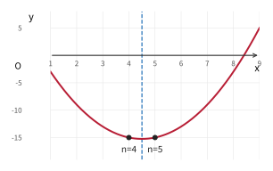
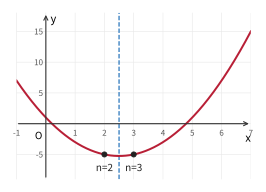
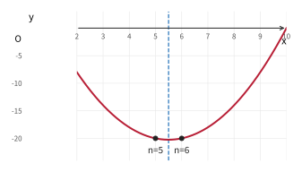

ホーム ＞ 数学I ＞ 2次関数の最大・最小
別冊練習問題 10 の解答 整数変数の最小値
(1) 整数 \(n\) に対する \(f(n)=n^2-9n+5\) の最小値と、そのときの \(n\) を求めよ。
平方完成
\(f(n)=n^2-9n+5=\left(n-\dfrac{9}{2}\right)^2- \dfrac{61}{4}\)。頂点は \(n=\dfrac{9}{2}\)。
点線は軸 \(n=\dfrac{9}{2}\)。整数の点は、軸の両隣の2つが同じ高さで最も低い。

頂点に近い整数
\[n=4,\ 5\ \text{が頂点から等距離 }\left(\pm\dfrac12\right)\]最小値
\[f(4)=f(5)=-15\]【答案】
\[n=4,\ 5\ \text{のとき最小 }-15\]答
(2) 整数 \(n\) に対する \(f(n)=n^2-5n+1\) の最小値と、そのときの \(n\) を求めよ。
平方完成
\(f(n)=n^2-5n+1=\left(n-\dfrac{5}{2}\right)^2- \dfrac{21}{4}\)。頂点は \(n=\dfrac{5}{2}\)。
点線は軸 \(n=\dfrac{5}{2}\)。整数の点は、軸の両隣の2つが同じ高さで最も低い。

頂点に近い整数
\[n=2,\ 3\ \text{が頂点から等距離 }\left(\pm\dfrac12\right)\]最小値
\[f(2)=f(3)=-5\]【答案】
\[n=2,\ 3\ \text{のとき最小 }-5\]答
(3) 整数 \(n\) に対する \(f(n)=n^2-11n+10\) の最小値と、そのときの \(n\) を求めよ。
平方完成
\(f(n)=n^2-11n+10=\left(n-\dfrac{11}{2}\right)^2- \dfrac{81}{4}\)。頂点は \(n=\dfrac{11}{2}\)。
点線は軸 \(n=\dfrac{11}{2}\)。整数の点は、軸の両隣の2つが同じ高さで最も低い。

頂点に近い整数
\[n=5,\ 6\ \text{が頂点から等距離 }\left(\pm\dfrac12\right)\]最小値
\[f(5)=f(6)=-20\]【答案】
\[n=5,\ 6\ \text{のとき最小 }-20\]答